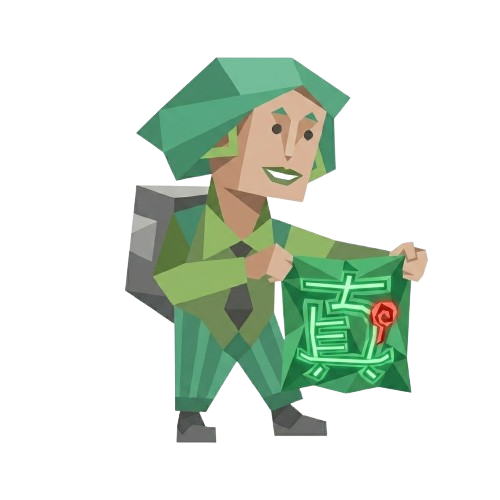

16题测出你是哪种追源人格！看看你符合真源哪个舞台的类型？
你的专属追源人格是：
“非常感谢大家来参与这个源体(YUAN‧TI)的小测试！这是一个很突发奇想的小网站（其中最大功臣一定是我们的gemini老师。。）也当作是小源的生日纪念礼物吧！妳／你的源体是什么呢？欢迎发在评论区和其他爱妻宝宝们分享^o^最后还是偷偷许愿一下：希望小源外务多多资源多多多多进组！！！”
测试制作：weibo＠歪卡日記